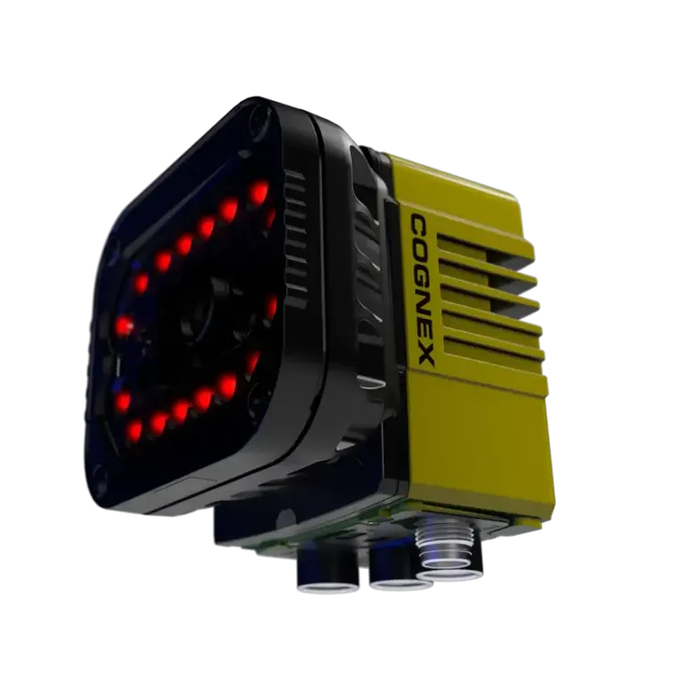

고해상도 영상 취득
넓은 FOV에서 작은 코드의 셀 정보를 확보해야 하는 경우에 유리합니다.
High-Resolution Barcode Reader
넓은 판독 영역과 여러 코드를 한 장면에서 처리해야 하는 공정을 위한 고해상도 AI 바코드 리더기입니다.

01 · Overview
DataMan 390은 넓은 영역 안에 있는 작은 코드, 여러 심볼 또는 설치 위치 편차가 큰 대상의 판독을 검토할 때 적합합니다. 단순히 해상도만 높이는 것이 아니라 촬영 거리, 코드 밀도, 조명 균일도와 한 번에 읽어야 하는 코드 수를 함께 계산해 시스템을 구성합니다.
전자 트레이, 의료·제약 포장, 자동차 부품, 다품종 물류처럼 넓은 시야와 멀티코드 판독이 필요한 추적성 공정에 활용합니다.
02 · Key Features
넓은 FOV에서 작은 코드의 셀 정보를 확보해야 하는 경우에 유리합니다.
트레이나 포장 단위에 배치된 여러 코드를 한 번의 촬영으로 처리하도록 검토합니다.
낮은 대비와 품질 편차가 있는 코드의 판독 신뢰도를 높이는 데 활용합니다.
03 · Application Fit
제품 위치 편차가 크거나 한 화면에 넓은 작업 영역을 포함해야 하는 공정입니다.
여러 부품의 코드를 동시에 수집하고 누락 여부를 확인하는 작업입니다.
작은 2D 코드로 개별 부품과 공정 데이터를 연결하는 생산라인입니다.
04 · Specification Guide
제품 선정에 앞서 아래 항목을 기준으로 검사 조건과 옵션을 확인합니다.
고해상도 고정식 산업용 바코드 리더기
넓은 영역, 멀티코드·멀티심볼 판독 검토
FOV, 최소 코드 크기, 코드 수, 판독 거리, 조명 균일도
적용 모델 및 옵션에 따라 상이합니다. 해상도, 렌즈, 조명, 통신과 세부 사양은 검사 대상 및 설치 조건을 확인한 뒤 문의 바랍니다.
05 · Inspection Tasks
06 · ASPEC Engineering
단품 공급만이 아니라 실제 생산라인에서 안정적으로 작동하도록 광학계, 제어와 소프트웨어를 함께 구성합니다.
07 · References & Related Products
ASPEC의 AI·OCR·바코드·정렬 검사 사례에서 검사 방식과 시스템 구성 방향을 확인할 수 있습니다. 공개 사례는 특정 제품 모델 사용을 의미하지 않으며 실제 모델은 현장 조건에 따라 선정합니다. 구축사례 라이브러리 보기
08 · FAQ
일반적인 고정식 판독은 290부터 검토하고, 넓은 영역의 작은 코드나 멀티코드 요구가 크면 390을 비교합니다. 실제 FOV와 코드 크기로 판단해야 합니다.
가능한 코드 수와 안정성은 코드 크기, 간격, 심볼 종류와 영상 품질에 따라 달라집니다. 실제 트레이와 배치 조건으로 테스트합니다.
아닙니다. 넓은 영역에서 조명 균일도가 떨어지면 코드 대비와 셀 형상이 불안정해집니다. 반사와 그림자를 줄이는 광학 구성이 필요합니다.
09 · Project Inquiry
검사 대상, FOV, WD, 택타임, 불량 유형을 알려주시면 카메라·렌즈·조명과 시스템 구성을 함께 검토해드립니다.